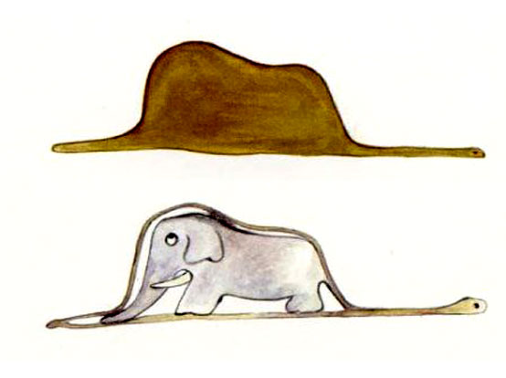
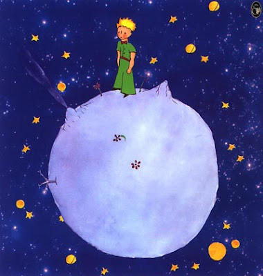

A placa “Aeroporto A-43”, adverte ao motorista que nas proximidades há um aeroporto ou um aeródromo. Fabricada conforme a resolução CONTRAN Nº 243 06/2007. Utilização: A utilização é obrigatória em locais onde aeronaves voam em baixas alturas, a fim de evitar acidentes que possam comprometer a segurança na via.
A Placa sinalização de Trânsito Advertência com sinal A-25 "mão dupla adiante" adverte o condutor da existência, adiante, alteração de mudança do sentido único de circulação para duplo.
A placa “Animais Selvagens A-36”, sinaliza ao condutor sobre a possibilidade de presença de animais selvagens. Fabricada conforme a resolução CONTRAN Nº 243 06/2007. Utilização: Utiliza-se desta placa quando existe a possibilidade de presença de animais selvagens transitando na via.
Sobre o piloto, o piloto que virá mais tarde, gostava e admirava desenhar, mais tarde desenhou uma coisa meio anormal, tinha forma e cor de chapéu, perguntou a todos se eles sabiam o que era, todos respondiam '' Chápeu '' , mais não era, o piloto tinha feito uma Jiboia bem pequena comendo um elefante....
O narrador conta como o Pequeno Príncipe lhe revelou que vinha de um planeta muito pequeno, onde ele tinha uma flor muito especial. Ele também conta sobre sua vida solitária no planeta, onde ele cuidava de vulcões e de uma rosa.
Um aviador e seu avião. Uma pane no Deserto do Saara. Um encontro inesperado com um príncipe que veio de outro planeta. O clássico da literatura interpretado por grandes artistas brasileiros.